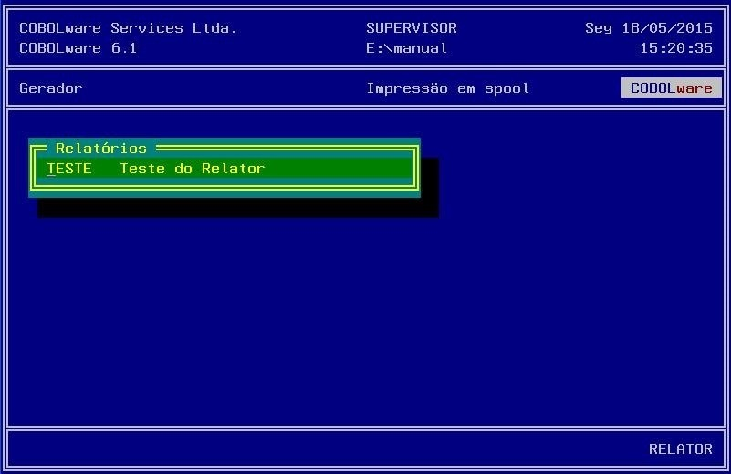
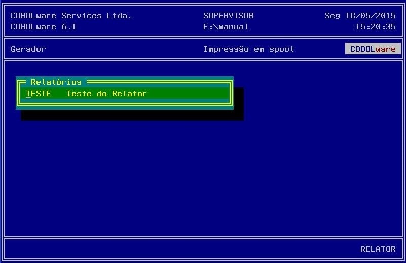
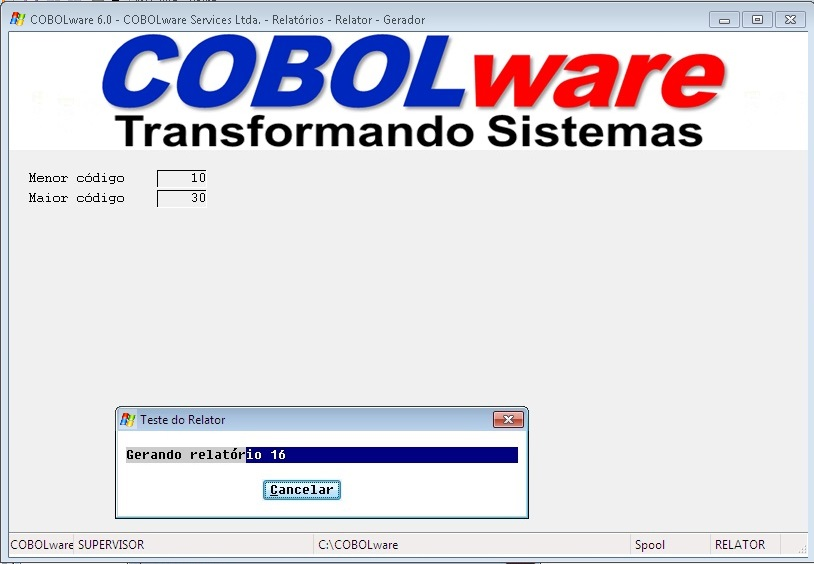
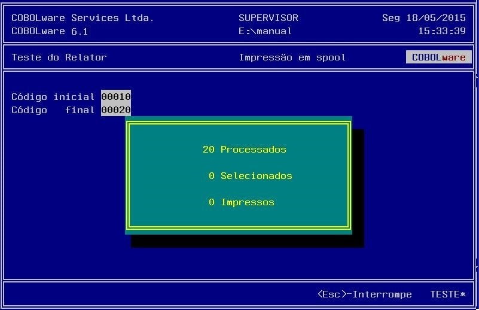

Modo gráfico

Modo texto

Gerador de Relatórios
Para produzir um relatório é preciso definir sua
composição através de um processo de edição
(módulo CWREL1).
Se
na definição da opção
de menu do gerenciador declarada para executar o gerador não
estiver definido o código do relatório a ser gerado
(Coluna Help/Path/Página),
será exibida uma lista dos relatórios disponíveis
para seleção.
|
Modo gráfico |
|
|
|
Modo texto |
|
 |
Uma vez selecionado, será imediatamente carregado e interpretado:
|
Modo gráfico |
|
 |
|
Modo texto |
|
 |